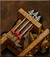
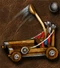
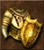
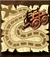
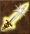
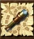
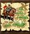
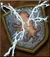
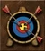
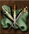

| Вторинний навик | Без навика | Основний навик | Просунутий навик | Експертний навик |
|---|---|---|---|---|
| Артилерія  |
Баліста, Пушка і Стрілецькі башти стріляють автоматично. | Контроль над Балістою, Пушкою і Стрілецькими баштами при обороні міста. Баліста: 50% шанс подвійного урону. Пушка: Двоєний урон по укріпленнях. | Контроль над Балістою, Пушкою і Стрілецькими баштами. Двоєний вистріл. Двоєний урон. Двоєний урон по укріпленнях. | Контроль над Балістою, Пушкою і Стрілецькими баштами. Двоєний вистріл. Двоєний урон по укріпленнях, троєний урон по військах. |
| Балістика  |
Катапульта стріляє автоматично. 10% шанс промаху. 30% шанс двоєного урону. | Контроль над катапультою. Збільшений шанс попасти по цілі. | +1 Двоєний вистріл. | Контроль над катапультою. Високий шанс попасти по цілі. Відсутність промахів. Двоєний вистріл. |
| Чаклунство |
Базовий рівень заклинань. | +5% до урону заклинань героя. | +10% до урону заклинань героя. | +15% до урону заклинань героя. |
| Грамотність |
- | При зустрічі герої можуть навчати один одного заклинанням 1 і 2 рівня. | При зустрічі герої можуть навчати один одного заклинанням 1, 2 і 3 рівня. | При зустрічі герої можуть навчати один одного заклинанням 1, 2, 3 і 4 рівня. |
| Дипломатія |
Базова ціна спроби підкупу при перемозі в бою. | 10% шанс приєднання нейтральних військ. -20% ціна підкупу при перемозі в бою. | 20% шанс приєднання нейтральних військ. -40% ціна підкупу при перемозі в бою. | 30% шанс приєднання нейтральних військ. -60% ціна підкупу при перемозі в бою. | Броня  |
- | -5% отримуваного істотами героя урону від фізичних атак. | -10% отримуваного істотами героя урону від фізичних атак. | -15% отримуваного істотами героя урону від фізичних атак. |
| Зоркість |
- | 40% шанс вивчити заклинання, використане героєм противника в бою після перемоги. | 50% шанс вивчити заклинання, використане героєм противника в бою після перемоги. | 60% шанс вивчити заклинання, використане героєм противника в бою після перемоги. |
| Імусцтво |
- | +125 золота на день до доходу гравця. | +250 золота на день до доходу гравця. | +500 золота на день до доходу гравця. |
| Інтелект |
Максимальний запас мани героя залежить тільки від його знання. | +25% до максимального запасу мани героя. Округлення вниз. | +50% до максимального запасу мани героя. Округлення вниз. | +100% до максимального запасу мани героя. |
Лідерство |
Базовий бойовий дух. | +1 до бойового духу героя. | +2 до бойового духу героя. | +3 до бойового духу героя. |
| Логістика  |
Максимальний запас ходу героя по суші залежить від швидкості найповільнішого істоти в його армії. | +10% до максимального запасу ходу героя по суші. | +20% до максимального запасу ходу героя по суші. | +30% до максимального запасу ходу героя по суші. |
| Магія Води |
Базовий ефект і ціна заклинань води. | Ціна заклинань води знижується на 1-5 одиниць. | Просунутий ефект заклинань води. | Експертний ефект заклинань води. |
| Магія Повітря |
Базовий ефект і ціна заклинань повітря. | Ціна заклинань повітря знижується на 1-5 одиниць. | Просунутий ефект заклинань повітря. | Експертний ефект заклинань повітря. |
| Магія Землі |
Базовий ефект і ціна заклинань землі. | Ціна заклинань землі знижується на 1-5 одиниць. | Просунутий ефект заклинань землі. | Експертний ефект заклинань землі. |
| Магія Вогню |
Базовий ефект і ціна заклинань вогню. | Ціна заклинань вогню знижується на 1-5 одиниць. | Просунутий ефект заклинань вогню. | Експертний ефект заклинань вогню. |
| Навігація |
Максимальний запас ходу героя по воді 1500 MP. | Максимальний запас ходу героя по воді +50%. | Максимальний запас ходу героя по воді +100%. | Максимальний запас ходу героя по воді +150%. |
| Напад  |
- | +10% до базового урону істот героя в ближньому бою. | +20% до базового урону істот героя в ближньому бою. | +30% до базового урону істот героя в ближньому бою. |
| Розвідка  |
Герой оглядає територію в радіусі 5 клітин. | Герой оглядає територію в радіусі 7 клітин. | Герой оглядає територію в радіусі 9 клітин. | Герой оглядає територію в радіусі 11 клітин. |
| Містицизм |
Герой відновлює 1 очко мани на день. | Герой відновлює 2 очка мани на день. | Герой відновлює 3 очка мани на день. | Герой відновлює 4 очка мани на день. |
| Мудрість |
Герой може вивчати заклинання 1 і 2 рівня. | Герой може вивчати заклинання 1, 2 і 3 рівня. | Герой може вивчати заклинання 2, 3 і 4 рівня. | Герой може вивчати заклинання будь-якого рівня. |
| Навчання |
- | +5% до отриманого героєм досвіду. | +10% до отриманого героєм досвіду. | +15% до отриманого героєм досвіду. |
| Перша допомога |
- | Контроль над наметом першої допомоги, лікує до 25 очок здоров'я. | Лікує до 50 очок здоров'я. | Лікує до 100 очок здоров'я. |
| Пошук шляху  |
Герой має штраф 25% на важку місцевість. | Штраф знижено до 10%. | Штраф знижено до 5%. | Герой не має штрафу на місцевість. |
| Спротив магії  |
- | Додає 5% до базового спротиву магії. | Додає 10% до базового спротиву магії. | Додає 20% до базового спротиву магії. |
| Стрільба  |
Додає 10% до базового урону при стрільбі. | Додає 25% до базового урону при стрільбі. | Додає 50% до базового урону при стрільбі. | |
| Тактика  |
Дозволяє розміщувати істот в зоні 3 клітинки перед початком бою. | Дозволяє розміщувати істот в зоні 5 клітинки перед початком бою. | Дозволяє розміщувати істот в зоні 7 клітинки перед початком бою. | |
| Удача |
+1 до базової удачі. | +2 до базової удачі. | +3 до базової удачі. | |
| Некромантія |
Після перемоги герой піднімає 5% ворожих створінь у вигляді скелетів. | Після перемоги герой піднімає 10% ворожих створінь у вигляді скелетів. | Після перемоги герой піднімає 15% ворожих створінь у вигляді скелетів. |